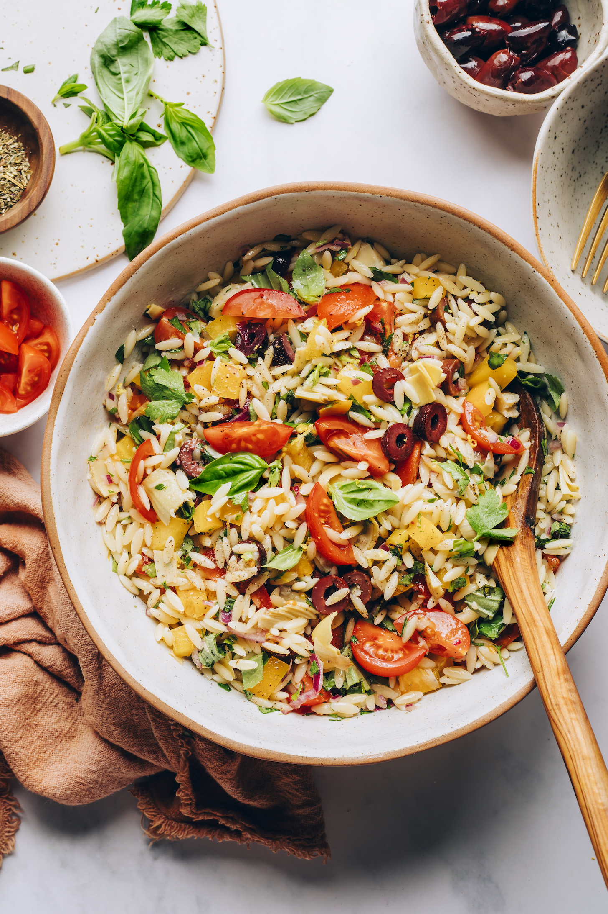

Fresh, colorful Mediterranean-inspired Orzo Pasta Salad! Plant-based, gluten-free optional, and perfect for BBQs, picnics, and beyond. Just 30 minutes required!
Ingredients
- 8 oz. dry orzo
- 1/2 cup finely chopped red onion
- 1 cup cherry tomatoes, quartered
- 3/4 cup finely chopped yellow bell pepper
- 3/4 pitted kalamata olives, roughly chopped
- 1/2 marianted artichoke hearts
Dressing
- 2 TB olive oil
- 2 TBsp lemon juice
- 2 tsp lemon zest
- 1/2 tsp garlic powder
- 1 TBsp maple syrup
Instructions
- Bring a large pot of salted water to a boil. Add the orzo and cook according to the package instructions. Reserve 1/4 cup (60 ml) of pasta water, drain the pasta, rinse with cold water, and toss with a little olive oil. Set aside to cool.
- While the water boils/pasta cooks, prep the pasta salad ingredients and make the dressing.
- Add the olive oil, lemon juice, lemon zest, garlic powder, maple syrup, Italian herbs, salt, pepper, nutritional yeast, and pasta water (once it’s ready) to a large mixing bowl and whisk to combine. Add the finely chopped red onion and mix again.
- Add the tomatoes, bell pepper, olives, artichoke hearts, parsley, and cooked orzo to the mixing bowl. Toss well to combine
- Mix in the basil just before serving. Taste and adjust as needed, adding more salt for overall flavor, lemon juice for brightness, or herbs for freshness. Store in an airtight container in the refrigerator for 3-4 days. Not freezer friendly.